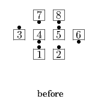
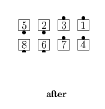

From any applicable Generalized 1/4 Tag: Very Centers Jaywalk with the outside dancers they are facing on the diagonal while the Ends of the Center Line Counter Rotate 1/4 (around the outside); those who meet in the original outside spots Hinge; Centers Star Circulate as Outsides Trade; those in the center Wave/Line Cast Off 3/4 as the others move up (Phantom Hourglass Circulate). Ends in Parallel Lines.
 
© Copyright 2004-2017 Vic Ceder and CALLERLAB Inc., The International Association of Square Dance Callers. Permission to reprint, republish, and create derivative works without royalty is hereby granted, provided this notice appears. Publication on the Internet of derivative works without royalty is hereby granted provided this notice appears. Permission to quote parts or all of this document without royalty is hereby granted, provided this notice is included. Information contained herein shall not be changed nor revised in any derivation or publication.